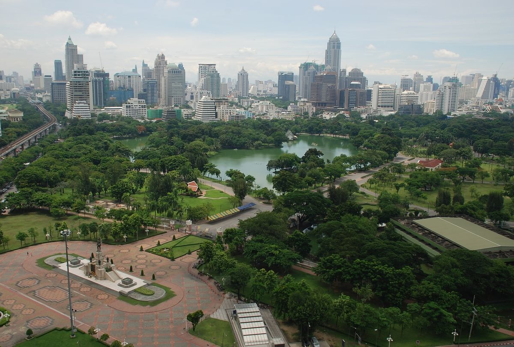
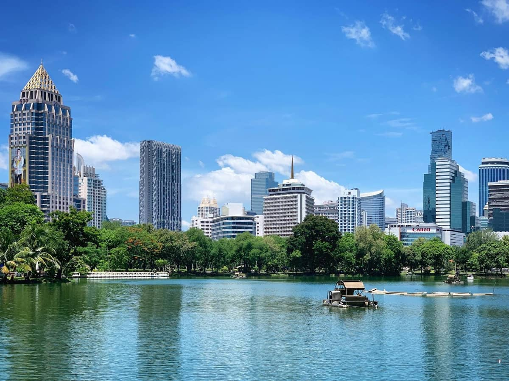
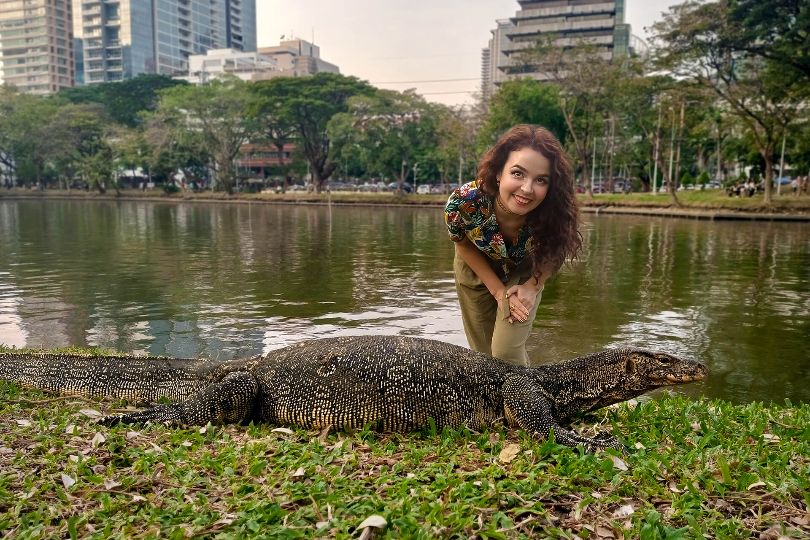
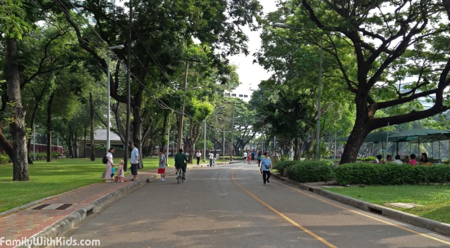
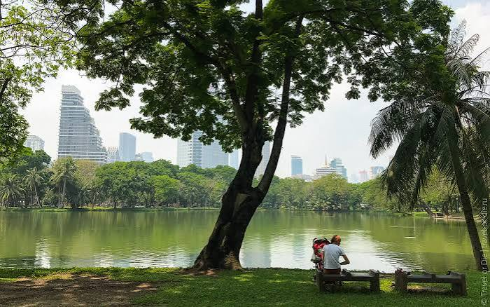
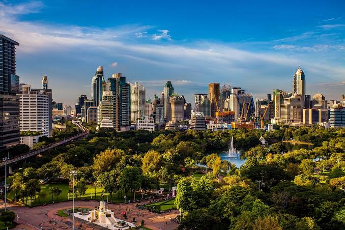

Travel Diary |
Главная | Страны | Советы | Места |

Парк Люмпини (Lumphini Park) — один из самых известных и больших парков Бангкока. Он находится прямо среди современных небоскрёбов делового района и позволяет на время спрятаться от городского шума, пробок и жары.
Парк получил своё название в честь места рождения Будды — Лумбини в Непале. Сегодня это популярное место для прогулок, занятий спортом и отдыха как среди туристов, так и среди жителей Бангкока.
Парк Люмпини находится в центральной части Бангкока, между районами Silom и Sathon.
Парк окружён современными небоскрёбами, офисными зданиями, торговыми центрами и дорогами, поэтому его легко узнать по большому зелёному пространству среди городской застройки.
Недалеко от парка находятся Mahanakhon, станции BTS и MRT, а также множество ресторанов и магазинов.
Вход в парк бесплатный.
Дополнительная плата за прогулку по территории не требуется. Деньги могут понадобиться только на отдельные развлечения, аренду спортивного инвентаря или еду в расположенных поблизости заведениях.
Парк Люмпини открыт ежедневно примерно с 04:30 до 21:00.
Лучшее время для посещения — утром или ближе к вечеру. В это время температура ниже, а в парке особенно много людей, которые занимаются спортом, бегают и гуляют.
Самый удобный способ — воспользоваться наземным метро BTS.
Нужно доехать до станции Sala Daeng на линии Silom.
После выхода со станции можно пройти пешком до одной из частей парка.
Также можно доехать до станции Ratchadamri и пройти к парку с другой стороны.
Один из самых удобных вариантов — воспользоваться подземным метро MRT.
Нужно выйти на станции Lumphini или Si Lom.
От обеих станций до парка можно добраться пешком.
До парка можно также доехать на такси или воспользоваться приложением Grab.
Однако в центральной части Бангкока часто бывают пробки, поэтому метро обычно является более удобным вариантом.
Парк Люмпини занимает большую территорию и сильно отличается от обычных городских парков. Здесь есть большое озеро, прогулочные дорожки, спортивные площадки и большое количество зелени.

Большое озеро — одна из главных достопримечательностей парка. Вокруг него проходят прогулочные дорожки, а на воде можно увидеть небольшие лодки.
Озеро особенно красиво утром и вечером, когда небоскрёбы вокруг парка отражаются в воде. Здесь можно спокойно прогуляться и сделать фотографии на фоне современной архитектуры Бангкока.

Одной из самых необычных особенностей парка являются гигантские вараны. Они свободно передвигаются по территории и часто встречаются возле озера.
Некоторые из них могут достигать довольно больших размеров. Наблюдать за ними интересно, но подходить слишком близко или пытаться их покормить не стоит.
|
 |
 |
 |
По территории парка проходит множество дорожек для прогулок и занятий спортом. Несмотря на расположение в самом центре Бангкока, внутри парка довольно тихо и много зелени.
Парк популярен среди жителей Бангкока благодаря большому количеству мест для занятий спортом. Здесь можно увидеть людей, которые бегают, занимаются гимнастикой, йогой и другими видами физической активности. В парке также есть площадки для различных спортивных занятий.
Одной из интересных особенностей Люмпини является контраст между природой и современной архитектурой. С территории парка хорошо видны многочисленные небоскрёбы районов Silom и Sathon. Благодаря этому парк является хорошим местом для фотографий, на которых одновременно видны зелень и современный Бангкок.
Парк Люмпини расположен в центральном районе Бангкока, поэтому его легко объединить с посещением других достопримечательностей.
King Power Mahanakhon находится недалеко от парка. После прогулки по Люмпини можно отправиться к небоскрёбу и подняться на Mahanakhon SkyWalk, чтобы посмотреть на Бангкок уже с высоты.
Один из главных деловых районов Бангкока. Здесь находятся небоскрёбы, офисы, рестораны, магазины и станции общественного транспорта. Парк Люмпини является своеобразным зелёным центром этого района.
Река Чао Прайя находится недалеко от парка. После прогулки по Люмпини можно отправиться к реке и продолжить знакомство с Бангкоком на речном транспорте.
CentralWorld — один из крупнейших торговых центров Бангкока. Он находится севернее парка и может стать хорошим вариантом для продолжения прогулки, особенно если хочется пообедать или сделать покупки.
Лучше приходить утром или вечером. Днём в Бангкоке может быть очень жарко, а в парке мало мест, где можно полностью спрятаться от солнца.
Не кормите варанов. Эти животные привыкли к присутствию людей, но подходить к ним слишком близко и пытаться трогать их не стоит.
Берите воду. Даже несмотря на большое количество деревьев, прогулка по парку в жаркую погоду может быть утомительной.
Уважайте местных жителей. Для многих жителей Бангкока Люмпини — это место для ежедневных тренировок и отдыха, а не только туристическая достопримечательность.
Следите за временем работы. Парк закрывается вечером, поэтому поздней ночью попасть внутрь уже нельзя.
Парк лучше всего посещать утром или вечером, когда температура становится комфортнее.
Например:
Так можно совместить спокойную прогулку среди зелени с посещением одного из самых современных небоскрёбов Бангкока.
Парк Люмпини — это зелёный оазис посреди огромного Бангкока. Здесь можно отдохнуть от городского шума, прогуляться возле озера, увидеть больших варанов и посмотреть на небоскрёбы, возвышающиеся вокруг парка.
Если Маханакхон показывает современный Бангкок с высоты, Чао Прайя — город с воды, а Чатучак — его торговую сторону, то Люмпини показывает спокойную и зелёную сторону столицы Таиланда.
Лучше всего прийти сюда ближе к вечеру, когда спадает жара и парк становится особенно приятным для прогулки.